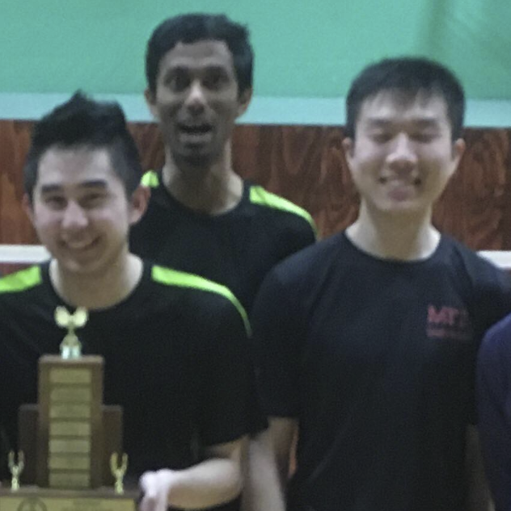

The MIT Badminton club's mission is to help players from all skill levels improve their play. To do this, we are coached once a week by Pashupati Paneru, a retired badminton player who has formerly represented Nepal internationally. Club officers also lead drills for players who are seeking to improve their play. Players who are simply seeking a recreational playing experience should play during the general open recreational times (not affiliated with MIT Badminton Club) available to the general public. The club is also grateful to Arthur Schwartz and Chris Lawrence for their donations to the club, as well as the Boston Open committee for their shuttle donations
The club officers for the 2021-22 year are:
President: Hoang Huynh ('22)
Vice-President: Jeffrey Mei (PhD '20)
Treasurer: Shawn Chao ('21)

Officers for 2017-18, from left: Jeffrey Mei, Reetik Sahu, Alex Ji
You can contact us at mitcbac-officers[at]mit[dot]edu.